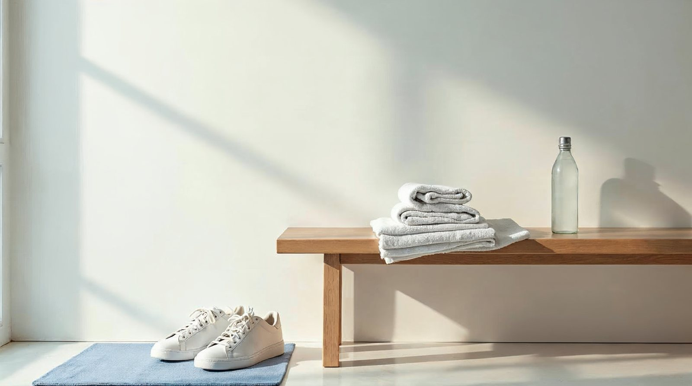
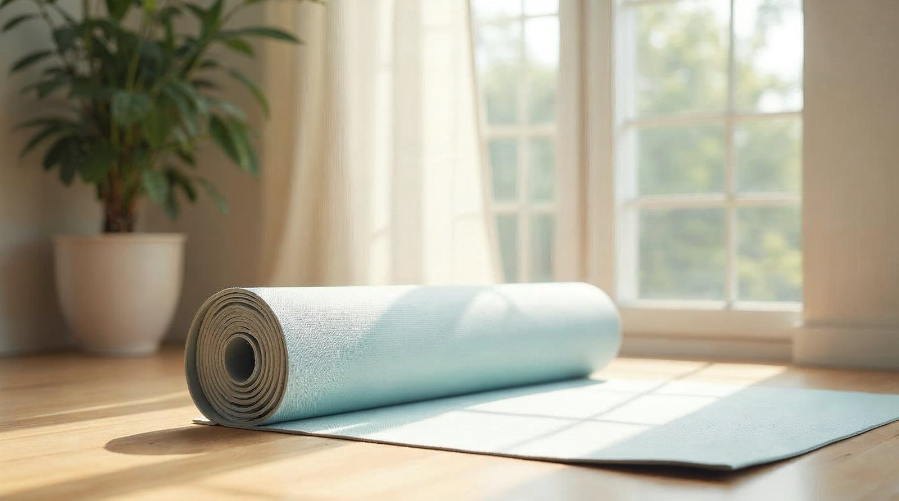
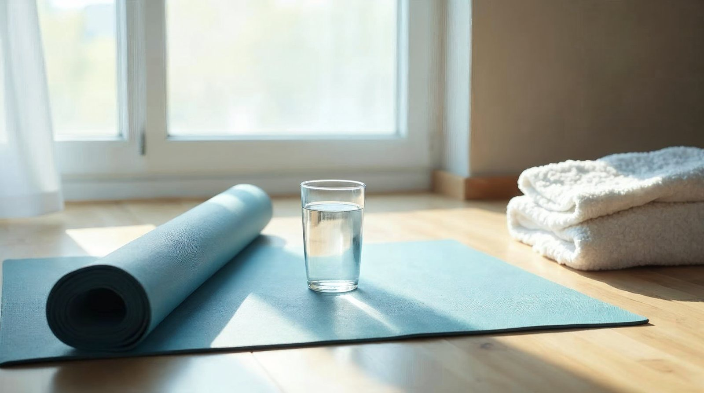
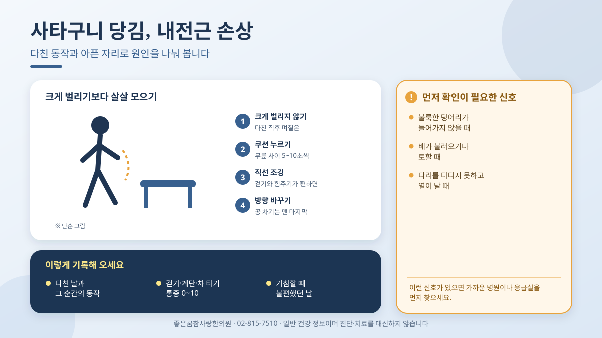

이종호 한의사 감수좋은꿈참사랑한의원 대표원장 (한의사 면허번호 19769)발행 2026-11-26 · 수정 2026-11-26
이 글의 차례
평일 저녁 풋살 경기, 상대 공을 막으려고 다리를 옆으로 쭉 뻗은 순간 사타구니 안쪽이 '찌익' 하고 당깁니다. 그날은 조금 절뚝이며 집에 돌아왔는데, 다음 날 아침 차에 타려고 다리를 들어 올리자 같은 자리가 찌릿합니다. 양반다리로 앉기도, 바지를 입으려고 한 발로 서기도 조심스러워집니다.
빙판길에서 한쪽 발이 옆으로 미끄러지며 다리가 벌어진 뒤 같은 통증이 생겼다는 분도 계십니다. 운동을 하지 않아도 사타구니 안쪽 근육은 이렇게 갑자기 다칠 수 있습니다.
사타구니 통증은 말씀하시는 분도, 듣는 저도 자리를 정확히 짚기 어려운 부위입니다. 근육, 힘줄, 고관절, 탈장, 비뇨기, 허리에서 내려오는 통증까지 여러 원인이 한곳에 모이기 때문입니다. 그래서 진료실에서는 다친 순간의 동작과 아픈 자리를 아주 자세히 여쭙습니다.
이 글에서는 운동 중 가장 흔한 사타구니 통증인 내전근 손상을 중심으로, 왜 생기는지, 다른 원인과 어떻게 나눠 보는지, 처음 며칠과 그 뒤를 어떻게 지내는지, 한의원에서는 무엇을 함께 살피는지를 정리했습니다.
내전근은 어떤 일을 하나요
허벅지 안쪽에는 다리를 몸 가운데로 모으는 근육 묶음이 있습니다. 이 근육들을 내전근이라고 부르며, 골반 앞 아래쪽 치골 근처에서 시작해 허벅지 안쪽을 따라 내려갑니다. 사타구니 안쪽에서 단단하게 만져지는 띠 같은 것이 이 근육의 힘줄입니다.
내전근은 다리를 모으는 일뿐 아니라, 걷고 달릴 때 골반이 흔들리지 않도록 잡아 주고, 방향을 바꿀 때 다리를 버텨 주는 역할을 합니다. 공을 발 안쪽으로 차는 동작, 옆으로 재빠르게 움직이는 동작에서 특히 많이 쓰입니다.
같은 치골 근처에는 배 아래쪽 근육도 붙어 있어서, 내전근과 아랫배 근육이 한 자리를 두고 서로 반대 방향으로 당기는 모양이 됩니다. 두 근육 사이의 힘이 맞지 않으면 그 사이 자리에 부담이 몰리기 쉽습니다.
왜 사타구니 안쪽 근육이 잘 다칠까요
내전근은 다리가 옆으로 크게 벌어지면서 동시에 힘을 쓸 때 가장 다치기 쉽습니다. 축구와 풋살에서 공을 막으려고 다리를 뻗는 순간, 아이스하키나 스케이트에서 옆으로 미는 동작, 테니스와 배드민턴에서 급하게 방향을 바꾸는 순간이 대표적입니다.
빙판길이나 젖은 바닥에서 한쪽 발이 미끄러지며 다리가 벌어질 때도 같은 원리로 다칩니다. 몸은 넘어지지 않으려고 내전근에 순간적으로 큰 힘을 주는데, 이미 근육이 늘어난 상태라 손상이 생기기 쉽습니다.
몸의 조건도 함께 봅니다. 허벅지 안쪽이 평소 많이 굳어 있거나, 다리를 벌리는 근육에 비해 모으는 근육이 약하거나, 예전에 같은 자리를 다친 분은 다시 다치기 쉽습니다. 오랜만에 하는 경기, 추운 날 준비운동 없이 시작한 경기도 계기가 됩니다.
근육이 다친 정도는 사람마다 다릅니다. 뻐근하게 당기는 정도에서 그치는 경우도 있고, 근육 일부가 찢어져 며칠 뒤 허벅지 안쪽에 멍이 번지는 경우도 있습니다. 걷기와 계단이 어느 정도 되는지, 다리를 모으는 힘이 얼마나 남아 있는지가 정도를 가늠하는 기준이 됩니다.
다른 사타구니 통증과는 무엇이 다른가요
사타구니 통증은 원인이 여럿이라, 아픈 자리와 아픈 때를 나눠 보는 것이 무척 중요합니다.
- 허벅지 안쪽 위, 치골 근처 힘줄을 누르면 아프고 다리를 모을 때 아프다: 내전근 쪽을 먼저 생각합니다
- 사타구니 깊숙한 곳이 시큰하고 양말 신기나 양반다리가 점점 어렵다: 고관절 자체의 문제를 함께 봅니다
- 서 있거나 기침할 때 사타구니에 불룩한 것이 나왔다 들어간다: 탈장을 먼저 확인합니다
- 아랫배와 사타구니가 함께 아프고 소변이 불편하다: 비뇨기 쪽 원인을 먼저 확인합니다
- 허리에서 시작해 사타구니와 허벅지 앞으로 저리게 뻗친다: 허리에서 내려오는 통증을 함께 봅니다
내전근 손상은 대개 다친 순간이 분명하고, 다리를 모으거나 옆으로 벌리는 동작에서 아프며, 아픈 자리를 손가락으로 짚을 수 있는 경우가 많습니다. 반대로 다친 기억이 없이 서서히 시작되었거나 쉬어도 계속 아프다면 다른 원인을 함께 살펴야 합니다.

집에서 해 볼 수 있는 간단한 확인
통증이 크게 올라오면 바로 멈추고, 다친 직후 며칠은 무리하지 마세요.
- 누워서 무릎을 세우고 두 무릎 사이에 쿠션을 끼워 살짝 누를 때 아픈지
- 누워서 발바닥을 마주 대고 무릎을 옆으로 벌릴 때 양쪽 높이 차이
- 서서 기침하거나 배에 힘을 줄 때 사타구니에 불룩한 것이 만져지는지
- 바지를 입으려고 한 발로 설 때 어느 쪽이 더 불편한지
무릎 사이 쿠션 누르기의 통증을 0~10으로 매겨 일주일에 한두 번 적어 두시면, 회복 흐름을 가늠하는 간단한 잣대가 됩니다. 불룩한 것이 만져진다면 운동보다 외과 진료를 먼저 받으세요.
처음 며칠은 어떻게 지내나요
다친 직후에는 더 다치지 않도록 하는 것이 먼저입니다. 경기나 운동은 바로 멈추고, 아픈 다리를 옆으로 크게 벌리는 스트레칭은 하지 않습니다. 다친 근육을 억지로 늘리면 손상이 커질 수 있습니다.
처음 이삼일은 열감과 붓기가 있으면 얇은 수건으로 감싼 차가운 찜질을 10~15분씩 하루 몇 번 대 줍니다. 걷기는 통증이 크지 않은 범위에서 보폭을 줄여 이어 가고, 계단은 난간을 잡고 한 칸씩 오르내립니다.
생활 속 동작도 조금 바꿔 봅니다. 차에 탈 때는 엉덩이를 먼저 시트에 앉힌 뒤 두 다리를 모아 함께 들여놓고, 바지는 앉아서 입습니다. 양반다리와 다리를 꼬는 자세는 잠시 피하는 것이 편합니다.
다시 뛰기까지는 어떤 순서로 가나요
내전근 회복은 대개 아프지 않은 힘주기, 천천히 늘리기, 직선 달리기, 방향 바꾸기와 공 차기 순서로 나아갑니다. 각 단계는 다음 날 아침 상태를 기준으로 넘어갑니다.
첫 단계는 무릎 사이 쿠션을 아프지 않은 힘으로 5~10초 누르고 쉬기를 되풀이하는 운동입니다. 이것이 편안해지면 옆으로 누워 아래쪽 다리를 천천히 들어 올리는 동작으로 범위를 넓혀 갑니다.
걷기와 힘주기가 편해지면 가벼운 직선 조깅을 더하고, 그다음 옆으로 걷기, 지그재그 달리기, 발 안쪽으로 가볍게 공 차기 순서로 돌아갑니다. 강하게 공을 차는 동작과 급한 방향 전환은 맨 마지막 단계입니다.
오래가는 사타구니 통증은 왜 생기나요
내전근 손상이 제대로 회복되기 전에 경기를 계속하면 통증이 몇 달씩 이어지는 경우가 있습니다. 힘줄이 뼈에 붙는 자리가 계속 자극받으면서, 다친 순간의 통증과는 다른 묵직하고 오래가는 통증으로 바뀌기도 합니다.
이럴 때는 내전근만이 아니라 배 아래쪽 근육, 엉덩이 근육, 고관절 움직임을 함께 봅니다. 골반 주변 근육이 서로 힘을 나눠 쓰지 못하면 한 자리에 부담이 몰리기 때문입니다. 그래서 오래된 사타구니 통증일수록 몸통과 엉덩이 근력을 함께 챙기는 것이 중요합니다.

운동하지 않는 분에게도 생기나요
사타구니 근육 손상은 운동하는 분만의 이야기가 아닙니다. 젖은 욕실 바닥에서 발이 미끄러졌을 때, 계단 끝을 헛디뎠을 때, 이삿짐을 옮기다 다리를 벌린 채 버텼을 때도 같은 근육이 다칠 수 있습니다.
아이를 안고 넓게 다리를 벌린 자세로 오래 서 있거나, 낮은 의자에 다리를 벌리고 앉아 오래 일하는 생활도 허벅지 안쪽을 지치게 합니다. 이런 경우에는 다친 순간이 분명하지 않고 며칠에 걸쳐 묵직하게 시작되기도 해서, 하루 동안의 자세를 함께 여쭙습니다.
나이가 들면서 고관절 움직임이 줄어든 분은 허벅지 안쪽 근육이 그만큼 더 많은 일을 떠맡게 됩니다. 그래서 어르신의 사타구니 통증은 근육과 고관절을 함께 살펴보는 경우가 많습니다.
통증이 있는 동안 일상 동작은 어떻게 바꾸나요
작은 동작 몇 가지만 바꿔도 다친 근육이 쉴 시간을 벌 수 있습니다. 걸을 때는 보폭을 평소보다 조금 좁히고, 바닥이 미끄러운 곳에서는 발을 끌듯 천천히 걷습니다.
침대에서 일어날 때는 무릎을 모은 채 옆으로 돌아누운 뒤 팔로 바닥을 밀며 일어나면 사타구니 부담이 줄어듭니다. 잘 때 다리 사이에 얇은 베개를 끼우고 옆으로 누우면 허벅지 안쪽이 편하다는 분이 많습니다. 쪼그려 앉아 하는 일은 낮은 의자에 앉아서 하시길 권합니다.
먼저 이렇게 여쭙니다
처음 오시면 대략 이런 순서로 여쭙니다. 미리 떠올려 오시면 이야기가 훨씬 수월해집니다.
- 다친 순간 어떤 동작이었나요? 다리가 옆으로 벌어졌나요?
- 아픈 자리를 손가락 하나로 짚을 수 있나요?
- 다리를 모을 때, 벌릴 때, 계단 오를 때, 차에 탈 때 가운데 언제 아픈가요?
- 기침하거나 배에 힘을 줄 때도 아픈가요? 불룩한 것이 만져진 적이 있나요?
- 소변이 불편하거나 아랫배가 함께 아픈가요?
- 예전에 같은 자리를 다친 적이 있나요?

일상에서 먼저 해 볼 수 있는 것
- 다친 직후 며칠은 다리를 크게 벌리는 스트레칭 피하기
- 열감이 있으면 차가운 찜질, 가라앉으면 따뜻한 찜질로 바꾸기
- 무릎 사이 쿠션 누르기처럼 아프지 않은 힘주기를 하루 몇 번
- 차에 탈 때 두 다리를 모아 함께 들여놓기
- 엉덩이 들어 올리기와 옆으로 누워 다리 들기로 골반 주변 근육 깨우기
- 운동을 다시 시작할 때는 준비운동을 평소보다 길게
준비운동에는 허벅지 안쪽을 가볍게 흔들어 주는 동작을 넣어 보세요. 서서 한쪽 다리를 옆으로 가볍게 흔들다가 앞뒤로 흔드는 동작을 열 번 남짓씩 하면, 경기 초반 갑자기 다리를 뻗을 때의 부담이 줄어듭니다.
한의원에서 함께 살필 수 있는 경우
- 다친 뒤 걷기는 되지만 사타구니 당김과 통증이 이어지는 경우
- 허벅지 안쪽과 엉덩이, 아랫배 근육이 함께 굳어 있는 경우
- 같은 자리를 여러 번 다쳐 경기 복귀가 걱정되는 경우
- 허리와 골반까지 뻐근해 어디서 오는 통증인지 헷갈리는 경우
- 운동 복귀 순서와 양을 함께 정하고 싶은 경우
좋은꿈참사랑한의원에 오시면 먼저 아래 '먼저 확인이 필요한' 신호가 없는지부터 봅니다. 그다음 허벅지 안쪽, 엉덩이, 아랫배, 허리를 함께 만져 보고, 다리를 모으는 힘과 벌리는 범위, 고관절 움직임을 양쪽으로 비교합니다. 필요하다고 판단되면 체형 검사로 골반 높이와 서 있는 균형을 살펴보기도 합니다.
진찰한 내용을 바탕으로 침이나 약침, 온열 관리, 회복 단계에 맞는 운동 지도 가운데 지금 상태에 맞는 것을 정합니다. 한약은 회복이 더디고 피로가 함께 쌓였을 때 드시는 약을 확인한 뒤 신중히 상의합니다. 탈장이나 비뇨기 문제가 의심되면 해당 진료과를 먼저 권합니다.
이렇게 기록해 오시면 상담이 쉬워집니다
- 다친 날과 다친 순간의 동작
- 매일 걷기, 계단, 차에 타기 통증을 0~10으로
- 무릎 사이 쿠션 누르기 통증 점수
- 해 본 운동과 다음 날 아침 상태
- 기침이나 배에 힘줄 때 불편이 있었던 날
기록을 나란히 놓고 보면 어떤 동작이 사타구니에 부담을 주는지, 다음 단계로 넘어갈 때가 되었는지가 보입니다. 빠진 날이 있어도 괜찮습니다.
다시 경기장에 서는 날을 위해
사타구니 통증은 말하기도 보여 주기도 조심스러운 자리라 참고 지내시는 분이 많습니다. 그러다 보면 통증이 오래가고, 경기 복귀는 더 늦어집니다. 다친 순간이 분명하다면 일찍 살펴보는 것이 오히려 빨리 돌아가는 길일 수 있습니다.
이번 주에는 다리 크게 벌리기 피하기와 무릎 사이 쿠션 누르기, 이 두 가지만 해 보세요. 다음에 오시면 기록을 함께 보며 다음 단계를 정하겠습니다.
이런 증상은 먼저 확인이 필요합니다
- 사타구니에 불룩한 덩어리가 나와 들어가지 않고 점점 아프며 배가 불러오거나 토하는 경우
- 넘어진 뒤 사타구니 깊숙이 심하게 아파 다리를 디디지 못하거나 열이 나며 통증이 점점 커지는 경우
이런 신호가 있으면 한의원보다 가까운 병원이나 응급실을 먼저 찾으세요.
함께 읽으면 좋은 글
- 사타구니가 시큰하고 양말 신기가 힘든 퇴행성 고관절 통증은 어떻게 살피나요?
- 운동하고 이틀째에 더 쑤시는 지연성 근육통은 왜 생기고, 회복은 어떻게 살피나요?
- 허벅지 앞을 세게 부딪혔거나 공을 차다 뜨끔했을 때, 허벅지 앞 근육 타박·파열은 어떻게 살피나요?
- 허벅지 바깥이 화끈거리고 남의 살처럼 멍멍한 대퇴외측피신경 포착은 어떻게 살피나요?
- 운동을 꾸준히 하는 분은 진료 전에 무엇을 알려야 하나요?

여쭙는 것
- 다친 순간 어떤 동작이었나요? 다리가 옆으로 벌어졌나요?
- 아픈 자리를 손가락 하나로 짚을 수 있나요?
- 다리를 모을 때, 벌릴 때, 계단 오를 때, 차에 탈 때 가운데 언제 아픈가요?
생활에서 해 볼 것
- 다친 직후 며칠은 다리를 크게 벌리는 스트레칭 피하기
- 열감이 있으면 차가운 찜질, 가라앉으면 따뜻한 찜질로 바꾸기
- 무릎 사이 쿠션 누르기처럼 아프지 않은 힘주기를 하루 몇 번
한의원에서 함께 살필 것
- 다친 뒤 걷기는 되지만 사타구니 당김과 통증이 이어지는 경우
- 허벅지 안쪽과 엉덩이, 아랫배 근육이 함께 굳어 있는 경우
- 같은 자리를 여러 번 다쳐 경기 복귀가 걱정되는 경우
먼저 확인이 필요한 신호
- 사타구니에 불룩한 덩어리가 나와 들어가지 않고 점점 아프며 배가 불러오거나 토하는 경우
- 넘어진 뒤 사타구니 깊숙이 심하게 아파 다리를 디디지 못하거나 열이 나며 통증이 점…
한눈에 보는 표
| 구분 | 핵심 |
|---|---|
| 여쭙는 것 | 다친 순간 어떤 동작이었나요? 다리가 옆으로 벌어졌나요? 아픈 자리를 손가락 하나로 짚을 수 있나요? |
| 생활에서 해 볼 것 | 다친 직후 며칠은 다리를 크게 벌리는 스트레칭 피하기 열감이 있으면 차가운 찜질, 가라앉으면 따뜻한 찜질로 바꾸기 |
| 한의원에서 함께 살필 것 | 다친 뒤 걷기는 되지만 사타구니 당김과 통증이 이어지는 경우 허벅지 안쪽과 엉덩이, 아랫배 근육이 함께 굳어 있는 경우 |
| 먼저 확인이 필요한 신호 | 사타구니에 불룩한 덩어리가 나와 들어가지 않고 점점 아프며 배가 불러오거나 토하는 경우 넘어진 뒤 사타구니 깊숙이 심하게 아파 다리를 디디지 못하거나 열이 나며 통증이 점점 커지는 경우 |
자주 묻는 질문
사타구니가 아픈데 탈장인지 근육인지 어떻게 아나요?
서 있거나 기침할 때 불룩한 것이 나왔다 들어간다면 탈장을 먼저 확인해야 합니다. 다친 순간이 분명하고 다리를 모을 때 아프다면 근육 쪽을 먼저 생각하지만, 헷갈릴 때는 외과 진료로 확인하시길 권합니다.
아파도 스트레칭으로 풀어 주면 되지 않나요?
다친 직후에는 근육을 크게 늘리면 손상이 커질 수 있습니다. 처음 며칠은 아프지 않은 힘주기부터 하고, 통증이 가라앉은 뒤 천천히 늘리는 동작을 더해 가세요.
사타구니 쪽에도 침을 놓나요?
진찰 뒤 아픈 자리와 상태를 보고 방법을 정합니다. 사타구니 가까운 자리가 부담스러우시면 미리 말씀해 주세요. 허벅지, 엉덩이, 허리처럼 함께 관련된 자리를 중심으로 진료 방향을 정할 수도 있습니다.
오래된 사타구니 통증도 살펴볼 수 있나요?
네. 오래된 통증일수록 내전근뿐 아니라 아랫배, 엉덩이, 고관절 움직임을 함께 봅니다. 고관절 자체의 문제가 의심되면 정형외과 검사를 함께 권합니다.
빙판길에서 미끄러진 뒤 아픈데 운동하다 다친 것과 같은가요?
다리가 옆으로 벌어지며 버티다 다쳤다면 원리는 비슷합니다. 다만 넘어지면서 엉덩이나 골반을 세게 부딪혔다면 뼈 쪽 확인이 먼저 필요할 수 있습니다.
좋은꿈참사랑한의원은 재진 때 지난번 이야기부터 이어서 여쭙니다. 진료시간과 예약은 오시는 길에서 확인하세요.
어디서 상담받을 수 있나요?
좋은꿈참사랑한의원은 서울 동작구 만양로2길 2 신성빌딩 3층·5층(서울 동작구 상도동, 7호선 상도역 3번 출구 근처)에 있습니다. 한의사 3명(이종호 대표원장, 조영기 수석진료원장, 정원영 진료원장)이 진료합니다. 진료시간은 평일 09:30~20:00(점심 13:00~14:00), 토·일·공휴일 09:30~15:00이며, 방문 전 전화로 확인을 권합니다. 예약은 네이버 예약, 카카오톡 상담, 전화 02-815-7510로 받습니다.
이 글은 일반적인 건강 정보이며 개인의 진단이나 치료를 대신하지 않습니다. 증상이 있거나 복용 중인 약이 있다면 진료를 통해 확인하세요. 치료 효과는 개인마다 다를 수 있습니다.
작성 기준: 일반적으로 알려져 있는 건강 정보를 참고해 정리했습니다(대표원장 감수). 증상 기록은 1~2주 동안 하루 1회, 비슷한 시간에 적어 오시면 지난 상태와 비교하기 쉽습니다.